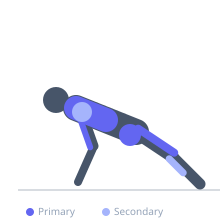
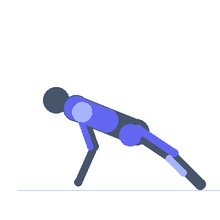

Exercise guide / Burpee
Burpee
The burpee is a full-body plyometric conditioning exercise that cycles through a squat, plank, push-up, squat, and vertical jump in a continuous sequence. It places simultaneous demands on the upper body, lower body, and core while elevating cardiovascular demand significantly, making it one of the highest-intensity bodyweight exercises. The burpee is widely used in metabolic conditioning, military fitness testing, and interval training protocols.
Primary muscles
rectus femoris
gluteus maximus
pectoralis major sternal
triceps long head
Secondary muscles
gastrocnemius medial
deltoid anterior
Stabilizers
rectus abdominis
transverse abdominis
Equipment
No Equipment (Bodyweight)


Starting position
- Stand upright with feet hip-width apart.
Setup
- No equipment required. Adequate floor space needed.
Steps
- Step 1: From standing, squat down and place both hands on the floor.
- Step 2: Jump or step both feet back to arrive in a push-up plank position.
- Step 3: Perform one push-up — lower the chest to the floor and press back up.
- Step 4: Jump or step both feet forward to return to a squat position.
- Step 5: Explosively jump up with arms overhead, fully extending the body.
- Step 6: Land softly and immediately repeat the sequence.
Coaching cues
- Hips high in the plank
- Full push-up — chest touches
- Jump tall at the top
Breathing
- Breathe continuously throughout. Exhale on the push-up press and on the jump.
Range of motion
- Full push-up range. Full hip and knee extension on the jump.
Tempo
- Performed for time (20–60 second intervals) or for reps (5–15). Pace sustainable throughout.
Common mistakes
- Skipping the push-up — reduces the upper body demand
- Not fully extending on the jump at the top
- Landing with rigid legs — absorb through the knees and hips
Safety
- High cardiovascular and musculoskeletal demand — progress gradually in volume.
- Not appropriate immediately post lower extremity injury.
Training
- endurance: 8–20 reps
- endurance: 3–6 sets
- Rest: {'endurance': 60}